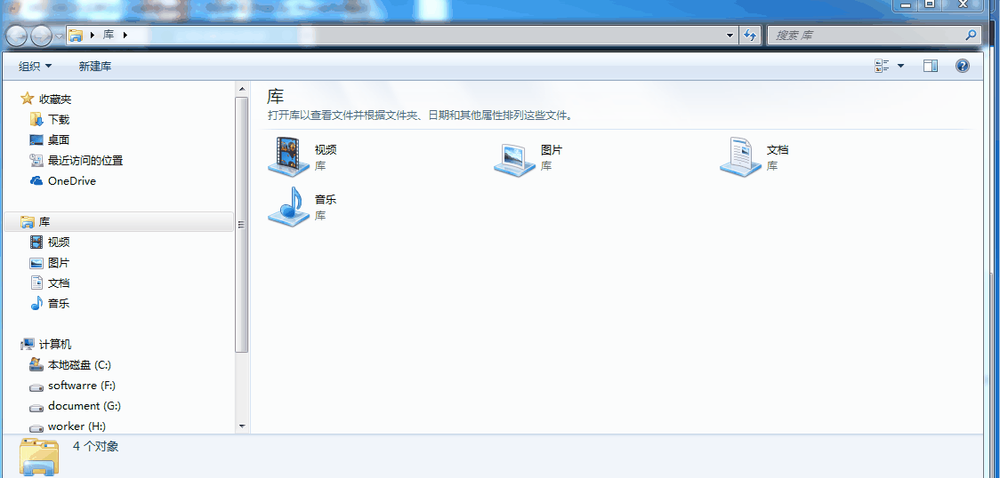
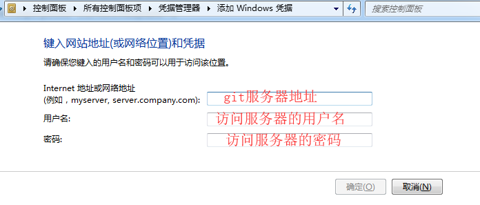
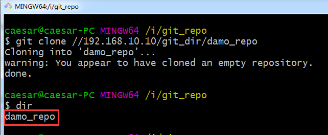
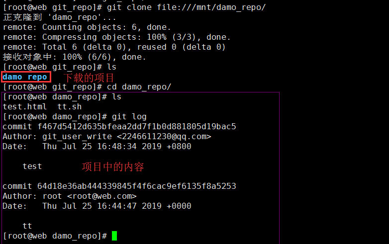

CentOS Linux release 7.5.1804 (Core)
最基本的就是 本地协议（Local protocol） ，其中的远程版本库是硬盘内的一个目录。这常见于团队每一个成员都对一个共享的文件系统（例如一个挂载的 NFS）拥有访问权，或者比较少见的多人共用同一台电脑的情况。后者并不理想，因为你的所有代码版本库如果长存于同一台电脑，更可能发生灾难性的损失。
如果你使用共享文件系统，就可以从本地版本库克隆（clone）、推送（push）以及拉取（pull）。像这样去克隆一个版本库或者增加一个远程到现有的项目中，使用版本库路径作为 URL。例如，克隆一个本地版本库，可以执行如下的命令
$ git clone /opt/git/project.git
或你可以执行这个命令：
$ git clone file:///opt/git/project.git
如果在 URL 开头明确的指定 file:// ，那么 Git 的行为会略有不同。如果仅是指定路径，Git 会尝试使用硬链接（hard link）或直接复制所需要的文件。如果指定 file:// ，Git 会触发平时用于网路传输资料的进程，那通常是传输效率较低的方法。指定 file:// 的主要目的是取得一个没有外部参考（extraneous references）或对象（object）的干净版本库副本– 通常是在从其他版本控制系统导入后或一些类似情况需要这么做。在此我们将使用普通路径，因为这样通常更快。要增加一个本地版本库到现有的 Git 项目，可以执行如下的命令：
$ git remote add local_proj /opt/git/project.git
然后，就可以像在网络上一样从远端版本库推送和拉取更新了。
优点
基于文件系统的版本库的优点是简单，并且直接使用了现有的文件权限和网络访问权限。如果你的团队已经有共享文件系统。只需要像设置其他共享目录一样，把一个裸版本库的副本放到大家都可以访问的路径，并设置好读/写的权限，就可以了。这也是快速从别人的工作目录中拉取更新的方法。如果你和别人一起合作一个项目，他想让你从版本库中拉取更新时，运行类似
git pull /home/john/project 的命令比推送到服务再取回简单多了。
缺点
这种方法的缺点是，通常共享文件系统比较难配置，并且比起基本的网络连接访问，这不方便从多个位置访问。如果你想从家里推送内容，必须先挂载一个远程磁盘，相比网络连接的访问方式，配置不方便，速度也慢。值得一提的是，如果你使用的是类似于共享挂载的文件系统时，这个方法不一定是最快的。访问本地版本库的速度与你访问数据的速度是一样的。在同一个服务器上，如果允许 Git 访问本地硬盘，一般的通过NFS 访问版本库要比通过 SSH 访问慢。最终，这个协议并不保护仓库避免意外的损坏。每一个用户都有“远程”目录的完整 shell 权限，没有方法可以阻止他们修改或删除 Git 内部文件和损坏仓库。
Git 通过 HTTP 通信有两种模式。在 Git 1.6.6 版本之前只有一个方式可用，十分简单并且通常是只读模式的。Git 1.6.6 版本引入了一种新的、更智能的协议，让 Git 可以像通过 SSH 那样智能的协商和传输数据。之后几年，这个新的 HTTP 协议因为其简单、智能变的十分流行。新版本的 HTTP 协议一般被称为“智能” HTTP 协议，旧版本的一般被称为“哑” HTTP 协议。我们先了解一下新的“智能” HTTP 协议。
智能（Smart） HTTP 协议
“智能” HTTP 协议的运行方式和 SSH 及 Git 协议类似，只是运行在标准的 HTTP/S 端口上并且可以使用各种 HTTP 验证机制，这意味着使用起来会比 SSH 协议简单的多，比如可以使用 HTTP 协议的用户名／密码的基础授权，免去设置 SSH 公钥。智能 HTTP 协议或许已经是最流行的使用 Git 的方式了，它即支持像 git:// 协议一样设置匿名服务，也可以像 SSH 协议一样提供传输时的授权和加密。而且只用一个 URL 就可以都做到，省去了为不同的需求设置不同的 URL。如果你要推送到一个需要授权的服务器上（一般来讲都需要），服务器会提示你输入用户名和密码。从服务器获取数据时也一样。事实上，类似 GitHub 的服务，你在网页上看到的 URL （比如，https://github.com/schacon/simplegit[] )，和你在克隆、推送（如果你有权限）时使用的是一样的。
哑（Dumb） HTTP 协议
如果服务器没有提供智能 HTTP 协议的服务，Git 客户端会尝试使用更简单的“哑” HTTP 协议。哑HTTP 协议里 web 服务器仅把裸版本库当作普通文件来对待，提供文件服务。哑 HTTP 协议的优美之处在于设置起来简单。基本上，只需要把一个裸版本库放在 HTTP 根目录，设置一个叫做 post-update的挂钩就可以了。此时，只要能访问 web 服务器上你的版本库，就可以克隆你的版本库。下面是设置从 HTTP 访问版本库的方法：
$ cd /var/www/htdocs/
$ git clone --bare /path/to/git_project gitproject.git
$ cd gitproject.git
$ mv hooks/post-update.sample hooks/post-update
$ chmod a+x hooks/post-update
这样就可以了。Git 自带的 post-update 挂钩会默认执行合适的命令（git update-server-info ），来确保通过 HTTP 的获取和克隆操作正常工作。这条命令会在你通过SSH 向版本库推送之后被执行；然后别人就可以通过类似下面的命令来克隆：
$ git clone https://example.com/gitproject.git
这里我们用了 Apache 里设置了常用的路径 /var/www/htdocs ，不过你可以使用任何静态 web 服务器 —— 只需要把裸版本库放到正确的目录下就可以。Git 的数据是以基本的静态文件形式提供的。通常的，会在可以提供读／写的智能 HTTP 服务和简单的只读的哑 HTTP 服务之间选一个。极少会将二者混合提供服务。
优点
我们将只关注智能 HTTP 协议的优点。不同的访问方式只需要一个 URL 以及服务器只在需要授权时提示输入授权信息，这两个简便性让终端用户使用 Git 变得非常简单。相比 SSH 协议，可以使用用户名／密码授权是一个很大的优势，这样用户就不必须在使用 Git 之前先在本地生成 SSH 密钥对再把公钥上传到服务器。对非资深的使用者，或者系统上缺少 SSH 相关程序的使用者，HTTP 协议的可用性是主要的优势。与 SSH 协议类似，HTTP 协议也非常快和高效。你也可以在 HTTPS 协议上提供只读版本库的服务，如此你在传输数据的时候就可以加密数据；或者，你甚至可以让客户端使用指定的 SSL 证书。另一个好处是 HTTP/S 协议被广泛使用，一般的企业防火墙都会允许这些端口的数据通过。
缺点
在一些服务器上，架设 HTTP/S 协议的服务端会比 SSH 协议的棘手一些。除了这一点，用其他协议提供Git 服务与 “智能” HTTP 协议相比就几乎没有优势了。如果你在 HTTP 上使用需授权的推送，管理凭证会比使用 SSH 密钥认证麻烦一些。然而，你可以选择使用凭证存储工具，比如 OSX 的 Keychain 或者 Windows 的凭证管理器。参考 “凭证存储” 如何安全地保存 HTTP 密码。
架设 Git 服务器时常用 SSH 协议作为传输协议。因为大多数环境下已经支持通过 SSH 访问 —— 即使没有也比较很容易架设。SSH 协议也是一个验证授权的网络协议；并且，因为其普遍性，架设和使用都很容易。通过 SSH 协议克隆版本库，你可以指定一个 ssh:// 的 URL：
$ git clone ssh://user@server/project.git
或者使用一个简短的 scp 式的写法：
$ git clone user@server:project.git
你也可以不指定用户，Git 会使用当前登录的用户名。
优势
用 SSH 协议的优势有很多。首先，SSH 架设相对简单 —— SSH 守护进程很常见，多数管理员都有使用经验，并且多数操作系统都包含了它及相关的管理工具。其次，通过 SSH 访问是安全的 —— 所有传输数据都要经过授权和加密。最后，与 HTTP/S 协议、Git 协议及本地协议一样，SSH 协议很高效，在传输前也会尽量压缩数据。
缺点
SSH 协议的缺点在于你不能通过他实现匿名访问。即便只要读取数据，使用者也要有通过 SSH 访问你的主机的权限，这使得 SSH 协议不利于开源的项目。如果你只在公司网络使用，SSH 协议可能是你唯一要用到的协议。如果你要同时提供匿名只读访问和 SSH 协议，那么你除了为自己推送架设 SSH 服务以外，还得架设一个可以让其他人访问的服务。
Git 协议是包含在 Git 里的一个特殊的守护进程；它监听在一个特定的端口（9418），类似于 SSH 服务，但是访问无需任何授权。要让版本库支持 Git 协议，需要先创建一个git-daemon-export-ok 文件 —— 它是 Git 协议守护进程为这个版本库提供服务的必要条件 ——但是除此之外没有任何安全措施。要么谁都可以克隆这个版本库，要么谁也不能。这意味这，通常不能通过 Git 协议推送。由于没有授权机制，一旦你开放推送操作，意味着网络上知道这个项目 URL 的人都可以向项目推送数据（所以一般不会使用）。
优点
目前，Git 协议是 Git 使用的网络传输协议里最快的。如果你的项目有很大的访问量，或者你的项目很庞大并且不需要为写进行用户授权，架设 Git 守护进程来提供服务是不错的选择。它使用与 SSH 相同的数据传输机制，但是省去了加密和授权的开销。
缺点
Git 协议缺点是缺乏授权机制。把 Git 协议作为访问项目版本库的唯一手段是不可取的。一般的做法里，会同时提供 SSH 或者 HTTPS 协议的访问服务，只让少数几个开发者有推送（写）权限，其他人通过git:// 访问只有读权限。Git 协议也许也是最难架设的。它要求有自己的守护进程，这就要配置xinetd 或者其他的程序，这些工作并不简单。它还要求防火墙开放 9418 端口，但是企业防火墙一般不会开放这个非标准端口。而大型的企业防火墙通常会封锁这个端口。
1、安装Samba服务
yum install -y samba2、创建Samba用户
2.1创建本地用户
[root@bogon ~]# useradd git_user_read # 只读用户
[root@bogon ~]# useradd git_user_write # 只写用户2.2映射Samba用户
[root@bogon ~]# pdbedit -a git_user_read
new password: # 输入密码
retype new password: # 确认密码
Unix username: git_user_read
...
[root@bogon ~]# pdbedit -a git_user_write
new password: # 输入密码
retype new password: # 确认密码
Unix username: git_user_read
...3、关闭SELinux
vi /etc/selinux/config
将SELINUX=enforcing改为SELINUX=disabled # 重启生效4、创建共享目录
[root@web ~]# mkdir /home/git_root/
[root@web ~]# chmod -R 777 /home/git_root5、配置Samba
[root@web ~]# vim /etc/samba/smb.conf
[git_dir]
path = /home/git_root/ # git 根目录
comment = this is git root directory
valid users = git_user_write git_user_read # 可读用户
write list = git_user_write # 可写用户其它配置默认即可，我们只需在文件的最后加上上述代码块即可。然后开启Samba服务：
[root@web ~]# systemctl start smb
[root@web ~]# systemctl start nmb6、验证Samba配置
这里最好把防火墙关闭了，要不然有可能会出问题。
[root@web ~]# systemctl stop firewalld验证主机：
本机 Windows 7 使用git_user_read用户登陆
虚拟主机 Centos 7 192.168.10.129 使用git_user_write用户登陆

由上面简单的动画我们可以看出git_user_read用户只有读取的权限，git_user_write用户有写入的权限。说明我们Samba的配置没有问题。下面我们开始真正进入正题
7、初始化git仓库
登陆我们的git服务器Centos 7 192.168.10.10，在/home/git_root/下创建我们的git仓库，这里我们创建了一个damo_repo。
[root@web git_root]# mkdir damo_repo
[root@web git_root]# git init --bare damo_repo/
[root@web git_root]# chmod -R 777 damo_repo/7.1clone远程仓库
这里我使用本机Windows 7 ，在我的I盘中新建了一个git_repo用于存放从git服务器拉取的数据，然后在”控制面板--凭据管理器“中添加访问凭据。

这里我添加的是git_user_write用户，因为它有写入权限。
$ git clone //192.168.10.10/git_dir/damo_repoclone成功后我们会看到如下：

我们在仓库中随便创建个test.html文件，如下操作：
test.html文件简单写个<h1>This is test</h1>
$ git add .
$ git commit -m 'test'
$ git push -u origin master7.2使用192.168.10.129客户端验证。
由于192.168.10.129是Centos 7，我们的git服务器时基于Samba做的。所以这里需要在192.168.10.129上挂载192.168.10.10服务器上的git仓库。
如下操作：
[root@web home]# mount -t cifs -o username=git_user_read,password=123 //192.168.10.10/git_dir/ /mnt/
[root@web home]# mkdir git_repo # 在home目录下创建git_repo用于存储git项目
[root@web home]# cd git_repo/
[root@web git_repo]# git clone file:///mnt/damo_repo/ # 获取git仓库中的项目然后我们会看到如下界面;

下面我们创建一个文件尝试推送查看是否可以
[root@web damo_repo]# vim abc.sh
echo 'Hello World'
[root@web damo_repo]# git add .
[root@web damo_repo]# git commit -m 'abc'
[root@web damo_repo]# git push -u origin master
# 推送失败
Counting objects: 4, done.
Compressing objects: 100% (2/2), done.
Writing objects: 100% (3/3), 309 bytes | 0 bytes/s, done.
Total 3 (delta 0), reused 0 (delta 0)
remote: error: insufficient permission for adding an object to repository database ./objects
remote: fatal: failed to write object
error: unpack failed: unpack-objects abnormal exit
To file:///mnt/damo_repo/
! [remote rejected] master -> master (unpacker error)
error: 无法推送一些引用到 'file:///mnt/damo_repo/'失败的原因是Samba权限的问题。git_user_read用户只有读取的权限，没有写入的权限。
小结：
如果Git服务器是本机，使用git clone file:///仓库地址。
如果Git服务器不是本机，本机是Windows，在控制面板中的凭证管理器中添加git服务器地址，用户名和密码。然后使用git clone //192.168.10.10/仓库。
如果Git服务器不是本机，本机是linux，需要使用mount命令将git服务器仓库关在到本机，然后使用git clone file:///本地挂载位置 。
未完待续。。。。。。。。。。。。。。